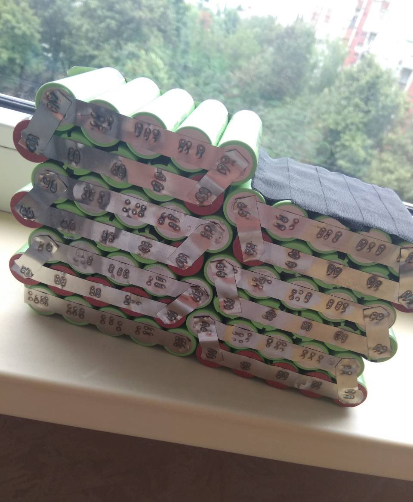
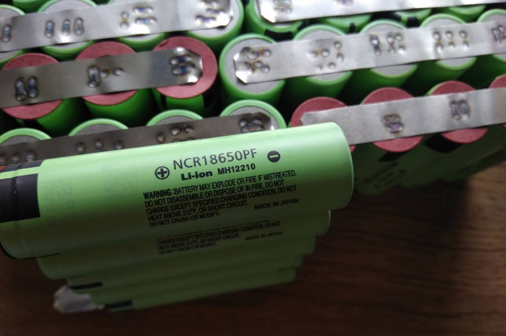

Procurarea și Conversia bicicletei

Inteția mea era să procur una nouă dar după ce am citit pe diferite forumuri despre acest model și după ce am constat tot pe loc, m-am decis să o procur.După procurare am schimbat cauciucurile , manetele, placuțele de frânare, discurile de frânare, rulmentul roții din fata și din spate, am schimbat saua, mashoanele de pe ghidon. Folosind bincicleta timp de 2 ani m-am plictisit de mult efort fizic și pe baza marelui boom de biciclete electrice m-am decis să o transform într-o bicilcetă electrică.Am tot căutat informați despre motor ce putere trebuei să aibă consumul de curent și dacă are recuperație la frânare.După ce am aflat totul m am apucat de treabă,am procurat un motor electric de 1500W(vați) din USA prin aliexpres :)).Pentru a putea pune totul în mișcare era nevoie și de o baterie care să poată rezista la un astfel de cosum exagerat al motorului.După ce am aflat capcitatea necesară a bateriei de 48v15ah din elementele 18650,m-am apucat de treabă.Am dat comandă de pe Aliexpres bateriile și BMS. După ce am terminat asamblarea și am început testele, am constat că pe o încărcare cimpletă pargurgeam o distanță minimă de 35 km și maximă de 65 km.În decurs de 4 ani cât m-am folosit am observat că se tot reducea distanta de maxima de parcurgere, după constatarea problemei, am aflat că BMS era de calitatea nu prea bune și din această cauză a crescut rezistența interiaoară a unui element 18650, care prin urmare a degradat și restul elemente.
Motorul de 1500w Golden Motors Magic Pie-5
| Product Name | Magic Pie 5 1500W |
| Motor Type | Brushless And Gear Less |
| Input Voltage | Open Voltage (20-60V) |
| Rated Power | 500-1000W |
| Motor Speed | 380RPM (Customizable 500 RPM) |
| Top Speed of Bike | 45KMH With 26 RIM |
| Size Available | 16''/20''/24''/26''/27.5''/28"/700c |
| Accessories | All-in-one integrated Cable with Waterproof Thumb or Twist Throttle with Battery gauge, Brake levers, Cruise control button. |
Bateria 48v15ah litiu-ion
Bateria este construită din 3 componente BMS,Baterii 18650 și fire pentru sudură de contact(cu pistolul de lipit este foarte complicat de menținut o tempereatură constantă). BMS(Battery management system) este o componentă electronică care monitorizează și acționează asupra acumulatorilor Litiu reîncărcabili fie asupra celulelor din care este format, fie asupra întregului pachet. Pentru a obține o autonomie maximă a acumulatorului, sistemul BMS, poate acționa asupra tuturor celulelor pentru a le obține o tensiune egala între ele.
|  |  |
|---|